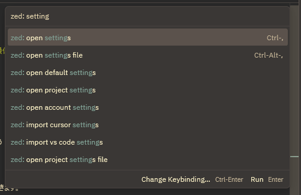

Recommended Zed setting.json
I share my minimal recommended settings for Zed's setting.json
Hello! I'm Pan-kun.
This time I'll describe my recommended settings for setting.json, which affects all workflows in the Zed editor.
Introduction
I'll briefly explain how to configure settings.json. If you've used VS Code before, most of this will be familiar, but I'll cover it just in case.
What is settings.json?
It's a file that defines editor behavior. You can customize themes, fonts, IDE layout, UI, extensions, and many more settings.
Note: there are other configuration files such as keymaps.json for key bindings.
How to open the settings
Open the command palette with [Ctrl + Shift + P] and type Zed: setting. A popup like the one in the attached image will appear.

Types of settings
Items that end with "settings" can be configured via the settings UI.
Items that end with "settings file" are configurable inside the settings.json script. (Refer to the documentation for property details.)
Scope of settings
Listed below in increasing order of priority. Settings defined later override earlier ones.
- Default — settings applied by Zed by default
- account — settings likely tied to your Zed or GitHub account
- project — settings applied per-project
Basic syntax
In general, as long as you follow the JSON structure below and set valid property names and values, you're fine:
{
"propertyName": value,
"A": {
"B": "val",
"C": true
},
"Array": ["S","A","M","P","L","E"]
}Refer to the list of properties you can set in settings.json here:
https://zed.dev/docs/configuring-zed
And see keymap.json docs here:
https://zed.dev/docs/key-bindings
Recommended settings
Of course these are recommendations — your ideal setup depends on your environment, projects, and personal preferences. Below is a short list of the settings I'd like to highlight first.
| Property | Value | Description |
|---|---|---|
| colorize_brackets | true | Colorizes matching bracket pairs |
| agent.default_model.provider | copilot_chat | Default LLM provider |
| agent.default_model.model | gpt-5-mini | Any model usable with copilot_chat |
| agent.default_profile | ask | Disables automatic code rewrite permission |
| inlay_hints | true | Renders inlay hint texts |
| lsp.omnisharp.initialization_options.AnalyzeOpenDocumentsOnly | true | Analyze only open files |
| lsp.omnisharp.initialization_options.EnableRoslynAnalyzers | true | Use Roslyn analyzers (set false for very large codebases) |
| lsp.omnisharp.initialization_options.EnableImportCompletion | true | Auto-insert using statements |
| languages.CSharp.language_servers | ["omnisharp"] | Language server for C# |
| languages.CSharp.format_on_save | "on" | Format on save |
| languages.CSharp.tab_size | 4 | Spaces per tab |
| languages.CSharp.preferred_line_length | 120 | Preferred max line length |
Some settings are nested deeply; as you can see, this article focuses mainly on C# users. If you want settings for C++ instead, add clangd under lsp and mirror similar languages settings for C/C++. You can configure each language independently.
Below is the full settings.json I use (in fact about half of this remains close to the defaults):
{
"colorize_brackets": true,
"context_servers": {},
"agent": {
"inline_assistant_model": {
"provider": "copilot_chat",
"model": "gpt-5-mini"
},
"dock": "right",
"always_allow_tool_actions": true,
"default_profile": "write",
"default_model": {
"provider": "copilot_chat",
"model": "gpt-5-mini"
},
"model_parameters": []
},
"edit_predictions": {
"disabled_globs": [],
"mode": "subtle"
},
"inlay_hints": {
"enabled": true
},
"preferred_line_length": 60,
"minimap": {
"max_width_columns": 60
},
"lsp": {
"omnisharp": {
"initialization_options": {
"AnalyzeOpenDocumentsOnly": true,
"EnableRoslynAnalyzers": true,
"EnableImportCompletion": true
}
},
"clangd": {
"binary": {
"path": "file to path\\clang.exe",
"arguments": []
}
}
},
"languages": {
"CSharp": {
"language_servers": ["omnisharp"],
"format_on_save": "on",
"tab_size": 4,
"preferred_line_length": 120
},
"JSON": {
"tab_size": 2
},
"YAML": {
"tab_size": 2
}
},
"hard_tabs": false,
"debugger": {
"dock": "right"
},
"cursor_shape": "bar",
"scrollbar": {
"cursors": true
},
"terminal": {
"dock": "right",
"cursor_shape": "bar",
"shell": {
"program": "C:\\Program Files\\Git\\bin\\bash.exe"
}
},
"features": {
"edit_prediction_provider": "zed"
},
"vim_mode": false,
"base_keymap": "VSCode",
"icon_theme": {
"mode": "dark",
"light": "Zed (Default)",
"dark": "VSCode Icons for Zed (Dark Angular)"
},
"ui_font_size": 14,
"buffer_font_size": 12.0,
"theme": {
"mode": "dark",
"light": "Gruvbox Light",
"dark": "Gruvbox Dark"
}
}(Note: I used quadruple backticks here to avoid interfering with the outer container; in the actual settings.json file you would use standard triple-backtick fences.)
Aside from the language server settings, I haven't heavily customized the UI — I keep a layout fairly close to the defaults. Personally I feel Zed's UI/UX is already very polished.
Conclusion
setting.json tends to be something you add to or edit over time and then promptly forget, so I wrote this as a personal memo that may help others as well. Next time I might write about keymap/shortcut settings.
Enjoy your Zed life!